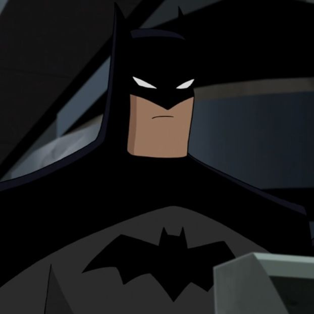
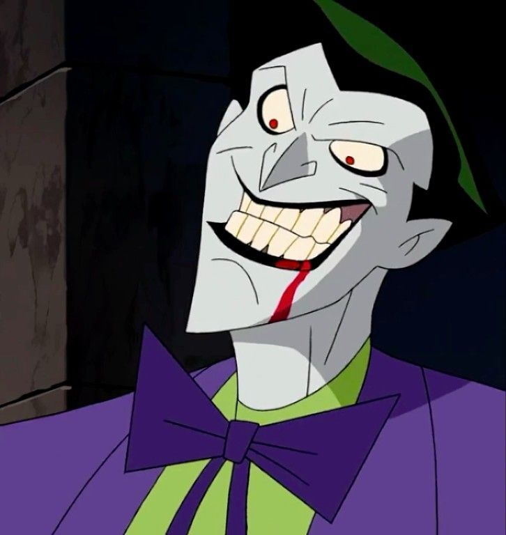
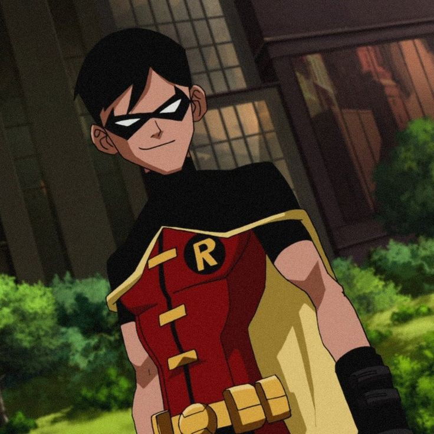
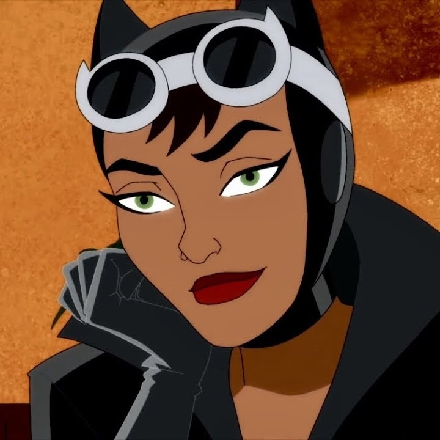
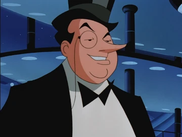
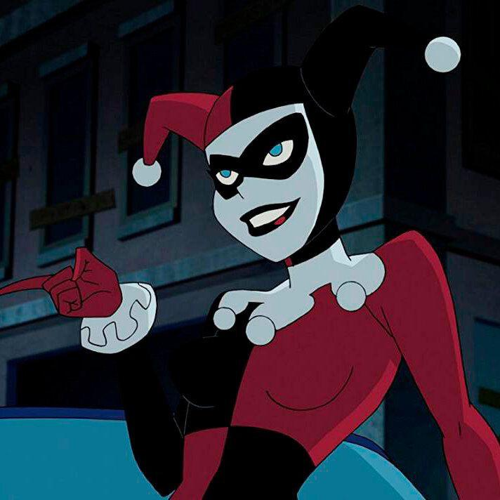
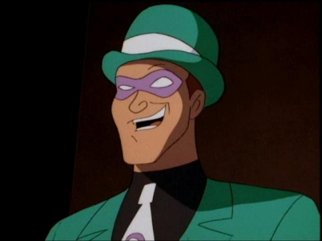
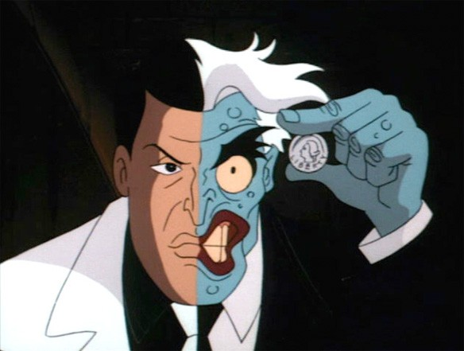
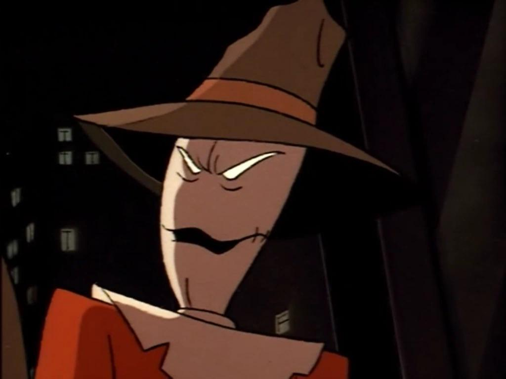
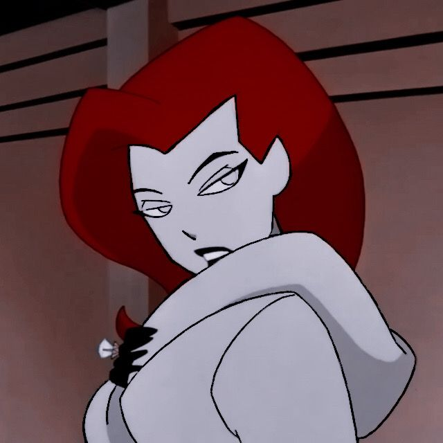

Batman
O Batman é o vigilante mascarado de Gotham City que utiliza seu intelecto de gênio, treinamento físico rigoroso e tecnologia avançada para combater o crime, sendo Bruce Wayne por trás da máscara, um bilionário motivado pelo trauma de perder os pais que jurou proteger a cidade sem utilizar armas de fogo ou tirar vidas, atuando como o maior detetive do mundo e principal estrategista da Liga da Justiça.

Coringa
O Coringa é o arqui-inimigo do Batman e o maior símbolo do caos em Gotham City...

Robin
O Robin é o fiel parceiro do Batman...

Mulher-Gato
A Mulher-Gato é uma ladra de elite...

Pinguim
O Pinguim é um dos senhores do crime mais influentes de Gotham...

Arlequina
A Arlequina é uma ex-psiquiatra do Asilo Arkham...

Charada
O Charada é um criminoso obcecado por quebra-cabeças...

Duas-Caras
O Duas-Caras é o ex-promotor público de Gotham...

Espantalho
O Espantalho é um ex-psicólogo obcecado pelo medo...

Hera Venenosa
A Hera Venenosa é uma botânica brilhante...